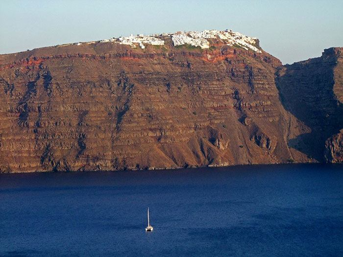
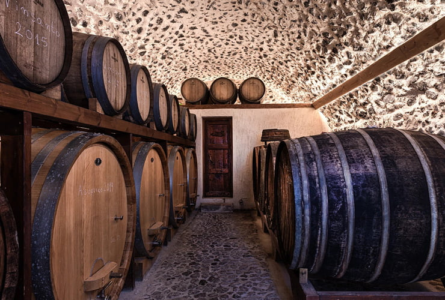

Αξιοθέατα
Το ενεργό ηφαίστειο της Σαντορίνης είναι από τα κορυφαία αξιοθέατα της Σαντορίνης και συνεχίζει να διέρχεται μια ήρεμη φάση, μετά τις ενδείξεις κινητικότητας που είχε δώσει το 2011-2012.
Tο ηφαίστειο της Σαντορίνης ειναι από τα μεγαλύτερα υποθαλάσσια ενεργά ηφαίστεια στον κόσμο. Ισως το μόνο ηφαίστειο που η Καλντέρα του φθάνει μέχρι τη θάλασσα.
Η μεγαλύτερή του έκρηξη συνέβη κατά την διάρκεια της Μινωικής Εποχής του Χαλκού πριν από 3.600 χρόνια.
Ολόκληρο το κέντρο του τότε κυκλικού νησιού βυθίστηκε στη θάλασσα κατά την διάρκεια της τρομερής ηφαιστειακής έκρηξης.
Η έκρηξη προκάλεσε παλιρροιακό κύμα που κυριολεκτικά αφάνισε τον προηγμένο πολιτισμό της Μινωικής Κρήτης, 70 μίλια νότια της Σαντορίνης.
Οι εκρήξεις του ηφαιστείου βύθισαν το κεντρικό μέρος του νησιού, ενώ άλλα σημεία του αποκόπηκαν.
Αυτό που τραβάει τώρα όλα τα βλέμματα είναι περίφημη Καλντέρα της Σαντορίνης, η μοναδική κατοικημένη θαλάσσια Καλντέρα παγκοσμίως με διάμετρο 10 χιλιομέτρων και ύψος 300 μέτρων περίπου.

Το ηφαίστειο της Σαντορίνης έχει δημιουργήσει ένα συγκλονιστικό τοπίο και ένα μοναδικό οικοσύστημα, στο οποίο ο αμπελώνας της Σαντορίνης, που
η ιστορία του είναι αρχαία και έρχεται από τα προϊστορικά χρόνια, έχει προσαρμοστεί με τον καλύτερο τρόπο.
Γνωστοί και ως δρόμοι του Κρασιού, με πολλές περιηγήσεις και εκδρομές, θα σας επιτρέψουν να γνωρίσετε την οινοπαραγωγική παράδοση της Σαντορίνης,
ενώ μπορούν να ικανοποιήσουν ακόμα και τους πιο απαιτητικούς φίλους του κρασιού.
Επισκεφτείτε τα οινοποιεία του νησιού και απολαύστε τις γευστικές δοκιμές για να γνωρίσετε τα διαφορετικά τοπικά είδη κρασιών.
Θα επισκεφτείτε αμπελώνες με ιστορία αιώνων και οι φιλόξενοι οινοπαραγωγοί της Σαντορίνης θα σας μυήσουν στο εξαιρετικό κρασί του νησιού,
καθώς και στην τελετουργία της μετατροπής των σταφυλιών σε κρασί.

Αναμφίβολα, η Σαντορίνη σου δίνει τη δυνατότητα να αποκτήσεις μοναδικές εμπειρίες επισκέπτοντας τα μαγευτικά τοπία της. Γι'αυτόν το λόγο άλλωστε, θεωρείται ένα απο τα ομορφότερα μέρη παγκοσμίως... τα λόγια περιττά!